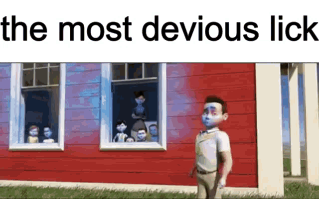

Recently, a lot of things have made suspicious. I was on my daily walk, near the Ohio border. Keep in mind, I do this every morning, so what occured was completely abnormal. I saw a figure in the distance, posing with the shape of "T". As he was doing this action, he was proclaiming with a strong vocal presence, "You guys see how sturdy I am, I am so sturdy my fellow Americans." Below is what I believe he looked like from a distance.
In under a second, almost the speed of light, he raised his hand. As soon as he did so, thousand of NPCs spawned around him, all doing "Griddy" at different speeds. I did notice that a few of them were quote on quote "Flossing", but there was tew few of them to make this an important insight. I managed to take a picture of him, in this action, as you can see.
Here is a depiction that leading scientists at Tik-Tok Industries have developed in theory on what the "Griddy" is and how it is portrayed. It is a very suddle, gentle, and unique form of dancing, specific to the young male population of today.
All the sudden, as if Obama possessed the power of teleportation and speed, a 1930s schoolhouse appeared in the middle of the field. As soon as it came, at it left. Obama started fly, converted himself into a small child, gained super-strength, and shocked my unready eyes. He ripped the schoolhouse off its foundation, and flew off with it. My brain couldn't process it, but my camera happened to be recording while I was dazed. Somehow when I viewed the media later, text was engrained on the top portion of the film.
My theory for why it says "the most devious lick" is that it must be communication dialect or phrase that Obama uses to time-travel with his followers that he calls, "his fellow Americans." To hear see what other possible devious licks look like, click here. As of today, I can't come up with a concrete explanation of how Obama did this. But a few things come to mind considering his geographic location.
Ohio, also known as Entity 1738, is a "State" in this "Country" that was founded by Gigamatius Chadium in 44 B.C. He also might have founded Florida, but this knowlege and accolade is unconfirmed. Below is a engraving of Chadium before his untimely death in 1492, on Columbus's first voyage, just before Ohio's landmass was even discovered. That tells you how "Chad" he was.
The funny thing about Ohio's landmass, is it's oddly shaped like a smashed PS4. This is an observation that only the people with the best vision could ever make, as my blind friend Cornelius described. That's how Cornelius was able to recognize the shape. Below is a map of Ohio.